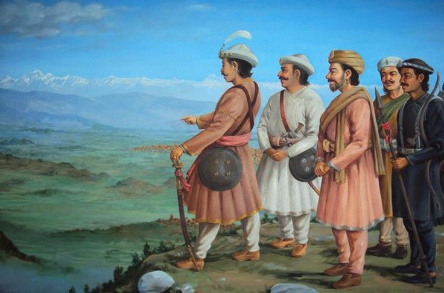
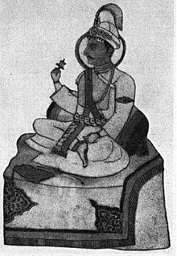
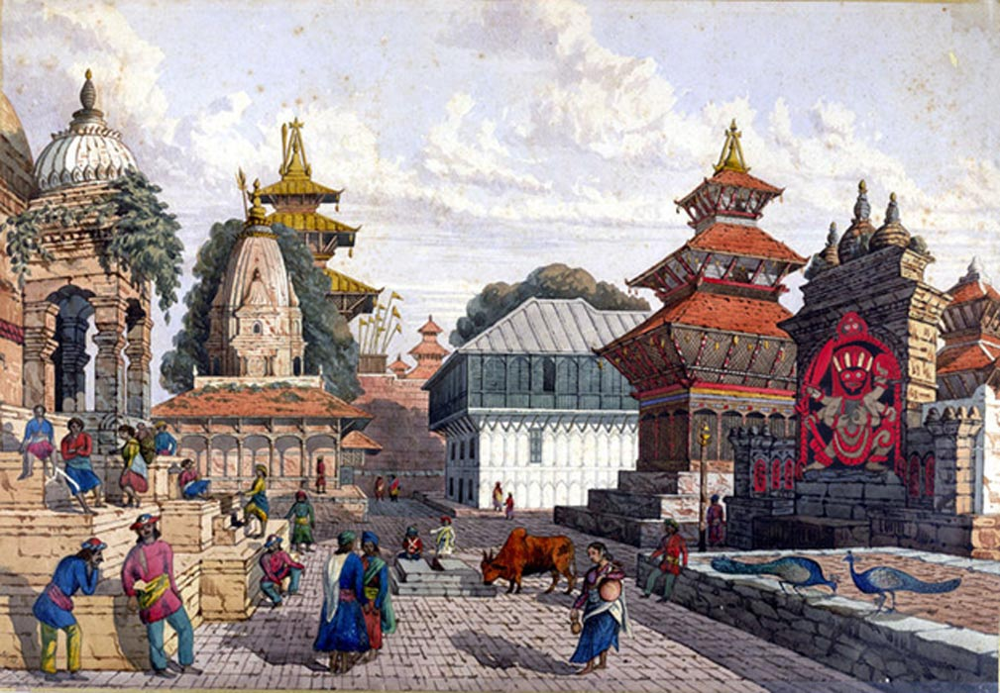

As you know that our country Nepal was scarted in many different small regions
It was brought to one whole beautiful nation by our admirable king named Prithivi Narayan Shah
Maharajadhiraj Prithivi Narayan Shah (1723–1775;[4] Nepali: पृथ्वीनारायण शाह) was the last ruler of the Gorkha Kingdom and first monarch of Kingdom of Nepal (also called Kingdom of Gorkha).
Prithvi Narayan Shah started the unification of Nepal.
Ancestry
The Gorkha dynasty was established by Khas king Dravya Shah where the king Rama Shah gained great popularity.
After them, Dambar Shah, Krishna Shah, Rudra Shah and Prithvipati Shah ruled over the state of Gorkha in succession. King Prithvipati Shah had gained a good reputation as an able King as he maintained good relations with the neighboring state kings, especially with the King of Lalitpur. He had also maintained a friendly relationship with Nripendra Malla, the King of the state named
Prithvipati had many sons among which the eldest son Birbhadra Shah had already established himself as the heir-apparent and the prince.However later on, the relationship started to worsen between Prithvipati Shah and Birbhadra Shah.
The latter died on his way back to the capital of Gorkha after staying a while in the then state of Bhaktapur. Prithvipati Shah's grandson and the father of Prithvi Narayan Shah, Nara Bhupal Shah was born of Mallikavati.
Prithvi Narayan Shah claimed to be a Gorkhali monarch of Rajput origin whose ancestors migrated from mediaeval india
Birth
Bhupal Shah married the princess of Khaachi state, Chandra Pravawati at around B.S. 1772 (1716 AD).( Nepali date 1779 B.S. 27th Poush) About a year later he ascended to the throne of Gorkha immediately after which he married Kausalyavati Devi, the daughter of Gundharva Sen, the King of Palpa.
No children were born of Nara Bhupal Shah from either queen which prompted him to marry two royal princesses, Buddhimati and Subhadramati. Yet later on, from Queen Kausalyavati Devi a child was born on the date B.S. 27 Poush, 1779 (January 7, 1723 AD).
The child was named Prithivi Narayan Shah. His complete care was taken by the eldest of the Queens, Chandraprabhawati.
Early life and education
Prince Prithivi Narayan Shah showed his greatness from a very early age. His education began at the age of five through the appropriate ceremony.
At that time, the responsibility to educate him was given to Mokchyeshwor Aryal and Bhanu Aryal, They were the Upadhyayas who worked in the palace as astrologers,
where they were also known as Jyotish or Jaisi. Even though his primary education was provided by the Gurus, the duty of developing his character was taken by Queen Chandra Pravawati.
It is said that seeing the prince of neighboring states Tanahun, Lamjung, and Kaski being indulged in excess pleasure, Chandra Pravawati kept Prithivi Narayan Shah
away from pleasurable and wrong pursuits. That is why no traces of pleasurable pursuits and diversion can be found in his early life.
The result of which, from young age virtuous qualities such as courage, diligence and positive character developed in him.
From a young age, he took interest in the affairs of his father's state and soon began to take on these responsibilities.
Prithivi Narayan Shah had an early dream of conquering Nuwakot, partially as his father had lost it to the Mallas of Kathmanduin an earlier war. After the death of his father in 1743 AD, Prithivi Narayan Shah ascended to the throne of Gorkha at the age of 20.
As king, he valued his people and enjoyed talking to his subjects about their general concerns. This practice helped him to build a rapport with his people and helped him to understand the requirements of the citizens of Gorkha.
King Shah sealed his borders and maintained a friendly diplomatic relationship with his neighbors, with the exception of the East India Company, which ignored Nepal and refused to open trade relationships at the time.

Unification of the kingdom>
Before Prithivi Narayan Shah's unification movement, there were a total of 54 states in Nepal.
In the South-Eastern Terai, there were three Sen states: Makawanpur, Bijayapur, and Chaudandi. In the West, from Gorkha to Gandaki Province, there were 24 states.
In the province of Karnali, there were 22 states with Kalyan, Samaal, Shahi and Chand dynasties. Along with Gorkha and Mustang, Bhaktapur, Kantipur and Lalitpur made up the remaining five states.
When Prithivi Narayan Shah had ascended to the throne of Gorkha in the year April 3, 1743 A.D, it was yet a small state.
He then started to contemplate the methods to turn Gorkha into a huge and strong state. He went to Varanasi to gain first-hand knowledge about the neighboring states and about India to the south. During those days, Varanasi was one of the large trade centers of India where people from different places gathered.
He met with different types of people and gained valuable understandings regarding the Political and Social conditions of the Indian Sub-Continent. In Varanasi, his father-in-law Abhiman Singh,a Rajput Chief, procured for him some firearms and a quantity of ammunition.
Nuwakot
His first attempt at invasion of Nuwakot in 1743 CE failed and his reign began with an immediate military defeat. Conquering Nuwakot was essential for the unification, as it lay between Kathmandu and the Gorkha District, making it a vital trading route to Tibet.
On his return to Gorkha from Varanasi, Prithivi Narayan Shah first took steps to defeat Nuwakotin the diplomatic field. He entered into friendly alliance with the chiefs of Lamjung , Tanahun and Palpa. This done, Prithivi Narayan Shah sent an army against Nuwakot from three directions. The Chief of Nuwakot knowing that Gorkha is going to attack them in near future had gone to take help from Jaya Prakash Malla, the king of Kantipur. Thus his son Jayant Ranastrong commanded the Nuwakot army representing his father. The Nuwakot army was defeated in 1744 CE and his country passed into the hands of Prithivi Narayan Shah's Gorkhas.
Kirtipur
Prithivi Narayan Shah's next strategy was to conquer all the places around the Nepal valley, that is, Kathmandu and the neighboring regions, and thereby to create an economic crisis in order that the conquest of Nepal valley might become easier. He first attacked Kirtipur, a dependency of Patan and a strategic post commanding the Nepal valley, but was signally defeated (1757).
He made a narrow escape from the battlefield but his minister Kalu Pandewas killed. Pande's death meant a great loss to the Gorkhas and it was not until 1763 that they were in a position to resume the policy of conquest.
Makwanpur
In 1763, the Gorkhas conquered
The conquest of Makwanpur, however, brought Prithivi Narayan Shah in a collision with Mir Qasim, the Nawab of Bengal. Bikram Sen, the king of Makwanpur, was then taken prisoner by Prithivi Narayan Shah. Upon this Kanak Singh, another local Chief complained to Nawab Mir Qasim and requested his intervention.
"In consequence of this complaint, the Nabab himself crossed over sending Gurgin Khan before him who arrived near Makwanpur where his whole army being destroyed the Nabab returned to Patna". The expedition of Qasim was also determined by Gurgin Khan's eagerness to test the strength and skill of the troops who he had disciplined and of the arillary which he had trained. Gurgin Khan's lust for the Nepalese gold was another cause of his earnestness to lead the expedition, although the Nawab had counseled against it.[13] Gurgin Khan lost a great number of his men and had to leave many stands of arms.
Victory over Kirtipur
n 1765, Prithvi Narayan Shah attacked Kirtipur again after two humiliating defeats. In Kirtipur, King Prithvi Narayan conquered the ancient city on his third attempt. The ferocity with which the conquerors had dealt with the natives of Kirtipur struck terror into the hearts of the neighbouring people and made the conquest easier.
Kathmandu Valley
After this, he intended to take possession of the Kathmandu Valley. Prithivi Narayan Shah's conquest of the whole of Nepal was rendered easier by the internal dissensions among the Nepali rulers. Ranjit Malla, the chief of Bhadgaon, invoked the assistance of the Gorkha Chief due to his feud with the chiefs of Patan and Kathmandu.[13] Prithivi Narayan Shah had previously gained over the Satbahalyas of Ranjit Malla by promising to leave them the throne and the revenue to content himself with nominal sovereignty over the country.
Prithivi Narayan Shah took possession of Bhadgaon and next he invested in Patan in 1767. The rapid expansion of the Gorkha dominions and the growth of the Gorkha power round the Nepal valley placed Jaya Prakash Malla, the Chief of Kathmandu in a state of siege. All egress and ingress having been stopped, Kathmandu faced with the danger of being starved into the submission. The valley was completely cut off from the outside world and was controlled solely by Shah.[13] Having understood that the Gorkhas cannot be defeated by his army alone, Jaya Prakash in this predicament sought military assistance from the Bengal Presidency[13] by sending one of his messengers to Patna in order to ask for help with the East India Company.[14] The officers in Patna of the East India Company sent the message to Bengal.[14] The East India Company seized the opportunity and sent a warning to Prithivi Narayan Shah and decided to send an expedition to relieve Jaya Prakash.
According to legends, when Prithivi Narayan Shah entered the durbar of Bhadgaon, he found the kings of three towns sitting together, whereat he and his companions laughed. Jaya Prakash was offended by this, and said, "O Gorkhalis, this has come to pass through the treachery of our servants, or else you would have had no cause for mirth." Prithivi Narayan Shah having conversed with Jaya Prakash Malla for a while then paid his respects to Ranjit Malla, and respectfully asked him to continue to rule as he had hitherto done, although Prithivi Narayan Shah had conquered the country. Ranjit Malla said that Prithivi Narayan Shah had obtained the sovereignty by the favor of God and that all that he now asked for was to be sent to Benaras. Shah entreated him to remain, but the recollection of the treachery of the servants was fresh in his memory and he would not be consent. Shah granted him the leave along with the expenses used for the journey. When Ranjit Malla reached the top of the Chandragiri Paa, he took a last view of Nepal, and with tears in his eyes exclaimed, " The Satbahalyas have killed my son Bir Narsinha, and have caused me this sorrow. " He then bade farewell to Taleju, Pashupatinath, and Guhyeshwari, and went to seek an asylum with Bisweswaranatha and Ganga.
He also occupied the Kuti Pass in circa 1756 CE, halting all trade through the pass and preventing communication with Tibet.
One thing which is very interesting to know is that he did not believe in only old-style violent subjugation, but used diplomatic ways to persuade small kingdoms to join his kingdom
Divyopadesh
Towards the end of his life, Prithvi Narayan Shah was troubled by illness to a great extent. He had probably started to realize his end was near, which is why he decided to organize an unofficial council meeting known as bhardaari-sabha. In this sabha he decided to inform his brothers, his son and his ministers on why was he involved in the unification of Nepal and what should the appropriate policies and programs for the future be regarding Nepal. This sabha continued for the whole day for about 5/6 hours. The messages he gave in this sabha was written down by his brothers and ministers and was compiled as Divyopadesh.
.png)